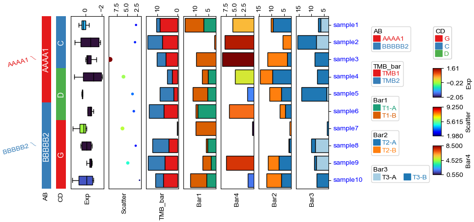

1. Import packages¶
[1]:
import os,sys
%matplotlib inline
import matplotlib.pylab as plt
import pickle
plt.rcParams['figure.dpi'] = 100
plt.rcParams['savefig.dpi']=300
# sys.path.append(os.path.expanduser("~/Projects/Github/PyComplexHeatmap/"))
import PyComplexHeatmap
from PyComplexHeatmap import *
2. Generate dataset¶
[2]:
#Generate example dataset (random)
df = pd.DataFrame(['GroupA'] * 5 + ['GroupB'] * 5, columns=['AB'])
df['CD'] = ['C'] * 3 + ['D'] * 3 + ['G'] * 4
df['EF'] = ['E'] * 6 + ['F'] * 2 + ['H'] * 2
df['F'] = np.random.normal(0, 1, 10)
df.index = ['sample' + str(i) for i in range(1, df.shape[0] + 1)]
df_box = pd.DataFrame(np.random.randn(10, 4), columns=['Gene' + str(i) for i in range(1, 5)])
df_box.index = ['sample' + str(i) for i in range(1, df_box.shape[0] + 1)]
df_bar = pd.DataFrame(np.random.uniform(0, 10, (10, 2)), columns=['TMB1', 'TMB2'])
df_bar.index = ['sample' + str(i) for i in range(1, df_box.shape[0] + 1)]
df_scatter = pd.DataFrame(np.random.uniform(0, 10, 10), columns=['Scatter'])
df_scatter.index = ['sample' + str(i) for i in range(1, df_box.shape[0] + 1)]
df_heatmap = pd.DataFrame(np.random.randn(30, 10), columns=['sample' + str(i) for i in range(1, 11)])
df_heatmap.index = ["Fea" + str(i) for i in range(1, df_heatmap.shape[0] + 1)]
df_heatmap.iloc[1, 2] = np.nan
3. Test the row / col orders & add selected rows labels¶
[3]:
#Annotate the rows with average > 0.3
df_rows = df_heatmap.apply(lambda x:x.name if x.sample4 > 0.5 else None,axis=1)
df_rows=df_rows.to_frame(name='Selected')
df_rows['XY']=df_rows.index.to_series().apply(lambda x:'A' if int(x.replace('Fea',''))>=15 else 'B')
row_ha = HeatmapAnnotation(
Scatter=anno_scatterplot(df_heatmap.sample4.apply(lambda x:round(x,2)),
height=12,cmap='jet',legend=False),
Bar=anno_barplot(df_heatmap.sample4.apply(lambda x:round(x,2)),
height=16,cmap='rainbow',legend=False),
selected=anno_label(df_rows,colors='red',relpos=(-0.05,0.4)),
label_kws={'rotation':30,'horizontalalignment':'left','verticalalignment':'bottom'},
axis=0,verbose=0)
col_ha = HeatmapAnnotation(label=anno_label(df.AB, merge=True,rotation=10),
AB=anno_simple(df.AB,add_text=True),axis=1,
CD=anno_simple(df.CD,add_text=True),
EF=anno_simple(df.EF,add_text=True,
legend_kws={'frameon':True}),
G=anno_boxplot(df_box, cmap='jet',legend=False),
verbose=0)
plt.figure(figsize=(5.5, 6.5))
cm = ClusterMapPlotter(data=df_heatmap, top_annotation=col_ha,right_annotation=row_ha,
col_cluster=True,row_cluster=True,
col_split=df.AB,row_split=2,
col_split_gap=0.5,row_split_gap=0.8,
label='values',row_dendrogram=True,
show_rownames=False,show_colnames=True,
tree_kws={'row_cmap': 'Set1'},verbose=0,legend_gap=5,
cmap='RdYlBu_r',xticklabels_kws={'labelrotation':-45,'labelcolor':'blue'})
plt.savefig("example0.pdf", bbox_inches='tight')
plt.show()

[4]:
#Annotate the rows with average > 0.3
df_rows = df_heatmap.apply(lambda x:x.name if x.sample4 > 0.5 else None,axis=1)
df_rows=df_rows.to_frame(name='Selected')
df_rows['XY']=df_rows.index.to_series().apply(lambda x:'A' if int(x.replace('Fea',''))>=15 else 'B')
row_ha = HeatmapAnnotation(S4=anno_simple(df_heatmap.sample4.apply(lambda x:round(x,2)),
add_text=True,height=10,
text_kws={'rotation':0,'fontsize':10,'color':'black'}),
# Scatter=anno_scatterplot(df_heatmap.sample4.apply(lambda x:round(x,2)),
# height=10),
Test=anno_barplot(df_heatmap.sample4.apply(lambda x:round(x,2)),
height=18,cmap='rainbow'),
selected=anno_label(df_rows,colors='red'),
axis=0,verbose=0,label_kws={'rotation':0,'horizontalalignment':'left','verticalalignment':'bottom'})
col_ha = HeatmapAnnotation(label=anno_label(df.AB, merge=True,rotation=15),
AB=anno_simple(df.AB,add_text=True),axis=1,
CD=anno_simple(df.CD,add_text=True),
EF=anno_simple(df.EF,add_text=True,
legend_kws={'frameon':False}),
Exp=anno_boxplot(df_box, cmap='turbo'),
verbose=0) #verbose=0 will turn off the log.
print(df)
print(df_box.mean(axis=1))
print(df_heatmap)
plt.figure(figsize=(6, 8))
cm = ClusterMapPlotter(data=df_heatmap, top_annotation=col_ha,right_annotation=row_ha,
col_split=df.AB,
row_split=df_rows.XY, col_split_gap=0.5,row_split_gap=1,
col_cluster=True,row_cluster=True,
label='values',row_dendrogram=False,show_rownames=True,show_colnames=True,
tree_kws={'row_cmap': 'Set1'},verbose=0,legend_gap=7,
annot=True,linewidths=0.05,linecolor='gold',cmap='turbo',
xticklabels_kws={'labelrotation':-45,'labelcolor':'blue'})
plt.show()
print(cm.row_order)
print(cm.col_order)
AB CD EF F
sample1 GroupA C E 0.872764
sample2 GroupA C E 0.095247
sample3 GroupA C E 1.618210
sample4 GroupA D E -0.796242
sample5 GroupA D E 0.732721
sample6 GroupB D E 0.803702
sample7 GroupB G F 0.156495
sample8 GroupB G F -0.649995
sample9 GroupB G H 0.507594
sample10 GroupB G H -0.112083
sample1 -0.571257
sample2 -0.160367
sample3 0.861138
sample4 0.757185
sample5 -0.306069
sample6 0.405108
sample7 0.036228
sample8 0.179176
sample9 0.664787
sample10 -1.039893
dtype: float64
sample1 sample2 sample3 sample4 sample5 sample6 sample7 \
Fea1 -0.940948 -0.512696 1.400540 -0.991953 0.876920 1.755839 -1.454762
Fea2 -0.534700 -0.689071 NaN -0.433301 0.093964 -0.698919 -0.015702
Fea3 0.589300 -0.271287 -1.103799 0.718501 -0.421988 0.489939 -0.294755
Fea4 -1.203997 -0.559720 -1.607338 0.916702 1.715665 0.311351 0.004267
Fea5 0.435102 -2.407412 -1.014878 0.074286 1.549944 0.358876 0.228303
... ... ... ... ... ... ... ...
Fea26 -0.382498 -1.458099 1.426227 -0.087203 -0.201476 1.075023 -0.329097
Fea27 -0.027340 -0.268139 0.644695 0.230802 0.363733 -0.056706 0.621080
Fea28 0.171638 -0.562843 0.873894 -1.626907 -0.740451 1.533503 0.091326
Fea29 -0.050350 0.423681 0.069160 -0.038037 -0.824514 -0.277757 -0.441749
Fea30 0.649812 0.827029 0.499133 0.135557 0.197032 0.953627 -0.856143
sample8 sample9 sample10
Fea1 0.407765 -0.312225 -1.036074
Fea2 -2.265543 0.213528 -0.028594
Fea3 1.006618 -0.902652 -1.034620
Fea4 0.803292 0.704045 -0.688346
Fea5 1.720176 -0.490411 -0.386441
... ... ... ...
Fea26 -0.024973 0.283570 -1.316227
Fea27 -0.007388 -0.301580 -0.504001
Fea28 -1.990793 0.654386 0.882345
Fea29 -0.507589 0.178060 2.173792
Fea30 0.635066 0.788223 -0.900331
[30 rows x 10 columns]

[['Fea16', 'Fea23', 'Fea15', 'Fea25', 'Fea19', 'Fea20', 'Fea29', 'Fea30', 'Fea28', 'Fea18', 'Fea21', 'Fea27', 'Fea22', 'Fea26', 'Fea17', 'Fea24'], ['Fea1', 'Fea7', 'Fea6', 'Fea8', 'Fea3', 'Fea13', 'Fea4', 'Fea5', 'Fea2', 'Fea10', 'Fea14', 'Fea11', 'Fea9', 'Fea12']]
[['sample1', 'sample3', 'sample2', 'sample4', 'sample5'], ['sample7', 'sample10', 'sample9', 'sample6', 'sample8']]
4. Annotations¶
[5]:
df = pd.DataFrame(['AAAA1'] * 5 + ['BBBBB2'] * 5, columns=['AB'])
df['CD'] = ['C'] * 3 + ['D'] * 3 + ['G'] * 4
df['F'] = np.random.normal(0, 1, 10)
df.index = ['sample' + str(i) for i in range(1, df.shape[0] + 1)]
df_box = pd.DataFrame(np.random.randn(10, 4), columns=['Gene' + str(i) for i in range(1, 5)])
df_box.index = ['sample' + str(i) for i in range(1, df_box.shape[0] + 1)]
df_bar = pd.DataFrame(np.random.uniform(0, 10, (10, 2)), columns=['TMB1', 'TMB2'])
df_bar.index = ['sample' + str(i) for i in range(1, df_box.shape[0] + 1)]
df_scatter = pd.DataFrame(np.random.uniform(0, 10, 10), columns=['Scatter'])
df_scatter.index = ['sample' + str(i) for i in range(1, df_box.shape[0] + 1)]
df_bar1 = pd.DataFrame(np.random.uniform(0, 10, (10, 2)), columns=['T1-A', 'T1-B'])
df_bar1.index = ['sample' + str(i) for i in range(1, df_box.shape[0] + 1)]
df_bar2 = pd.DataFrame(np.random.uniform(0, 10, (10, 2)), columns=['T2-A', 'T2-B'])
df_bar2.index = ['sample' + str(i) for i in range(1, df_box.shape[0] + 1)]
df_bar3 = pd.DataFrame(np.random.uniform(0, 10, (10, 2)), columns=['T3-A', 'T3-B'])
df_bar3.index = ['sample' + str(i) for i in range(1, df_box.shape[0] + 1)]
df_bar3.iloc[5,0]=np.nan
df_bar4 = pd.DataFrame(np.random.uniform(0, 10, (10, 1)), columns=['T4'])
df_bar4.index = ['sample' + str(i) for i in range(1, df_box.shape[0] + 1)]
df_bar4.iloc[7,0]=np.nan
print(df)
print(df_box)
print(df_scatter)
print(df_bar)
print(df_bar1)
print(df_bar2)
print(df_bar3)
print(df_bar4)
AB CD F
sample1 AAAA1 C 1.138836
sample2 AAAA1 C 0.089760
sample3 AAAA1 C -0.062401
sample4 AAAA1 D -0.841819
sample5 AAAA1 D 0.770599
sample6 BBBBB2 D -1.492242
sample7 BBBBB2 G 3.028881
sample8 BBBBB2 G -0.221926
sample9 BBBBB2 G -0.178126
sample10 BBBBB2 G -0.109186
Gene1 Gene2 Gene3 Gene4
sample1 -0.205605 0.353428 0.345021 1.162502
sample2 -0.143347 0.789906 -0.597520 0.425558
sample3 0.774741 0.955253 0.951721 0.700219
sample4 -1.620889 0.167393 -0.117225 -0.016745
sample5 -0.527817 0.243648 1.175750 -0.021358
sample6 -0.528173 0.772886 0.083638 0.504743
sample7 0.538735 1.071218 -1.016351 0.794161
sample8 -1.362406 0.916882 -0.591689 0.719308
sample9 0.282177 -0.440652 -1.104478 0.181686
sample10 -1.671387 -0.474593 1.690925 0.401806
Scatter
sample1 7.956538
sample2 6.860670
sample3 0.903585
sample4 4.317481
sample5 5.248263
sample6 3.069951
sample7 5.819827
sample8 4.709234
sample9 5.170268
sample10 6.934583
TMB1 TMB2
sample1 2.561584 9.870937
sample2 6.187645 3.526127
sample3 7.739903 2.005565
sample4 5.436285 0.379648
sample5 4.190849 3.771744
sample6 1.118953 9.209183
sample7 5.692602 1.470775
sample8 6.188962 5.133594
sample9 4.773937 3.313036
sample10 4.946510 3.354606
T1-A T1-B
sample1 8.993288 6.929543
sample2 5.479138 2.428293
sample3 1.559119 4.666502
sample4 2.755891 4.370076
sample5 0.963439 1.843685
sample6 3.161457 0.272211
sample7 4.424686 4.371926
sample8 9.619187 3.223806
sample9 8.211900 9.551546
sample10 4.989608 1.222619
T2-A T2-B
sample1 6.195165 2.133514
sample2 3.390641 2.533998
sample3 1.762192 0.071395
sample4 9.845340 5.522860
sample5 3.951365 6.090424
sample6 6.561504 3.809950
sample7 7.090231 6.019624
sample8 1.835068 1.435536
sample9 9.762525 6.399765
sample10 5.082793 8.334370
T3-A T3-B
sample1 6.584326 7.716564
sample2 4.145522 8.660254
sample3 4.524620 0.550792
sample4 7.517019 1.075048
sample5 4.810954 4.108697
sample6 NaN 6.210406
sample7 0.263072 3.626558
sample8 2.979272 2.401830
sample9 1.520702 1.994801
sample10 9.622567 9.567772
T4
sample1 3.158372
sample2 7.306341
sample3 4.387930
sample4 8.319988
sample5 2.997748
sample6 3.606941
sample7 6.419668
sample8 NaN
sample9 8.466287
sample10 7.088039
[6]:
plt.figure(figsize=(4, 8))
col_ha = HeatmapAnnotation(label=anno_label(df.AB, merge=True,rotation=15),
AB=anno_simple(df.AB,add_text=True,legend=True), axis=1,
CD=anno_simple(df.CD, add_text=True,legend=True,text_kws={'color':'black'}),
Exp=anno_boxplot(df_box, cmap='turbo',legend=True),
Scatter=anno_scatterplot(df_scatter),
TMB_bar=anno_barplot(df_bar,legend=True,cmap='Set1'),
Bar1=anno_barplot(df_bar1,legend=True,cmap='Dark2'),
Bar4=anno_barplot(df_bar4,legend=True,cmap='turbo'),
Bar2=anno_barplot(df_bar2,legend=True,cmap='tab10'),
Bar3=anno_barplot(df_bar3,legend=True,cmap='Paired'),
plot=True,legend=True,legend_gap=3,hspace=0.15)
col_ha.show_ticklabels(df.index.tolist(),fontdict={'color':'blue'},rotation=-30)
plt.show()
Starting plotting HeatmapAnnotations
Collecting annotation legends..

Change orentation down and add extra space¶
[7]:
plt.figure(figsize=(4, 8))
row_ha = HeatmapAnnotation(
TMB_bar=anno_barplot(df_bar,legend=True,cmap='Set1'),
Bar1=anno_barplot(df_bar1,legend=True,cmap='Dark2'),
Bar4=anno_barplot(df_bar4,legend=True,cmap='turbo'),
Bar2=anno_barplot(df_bar2,legend=True,cmap='tab10'),
Bar3=anno_barplot(df_bar3,legend=True,cmap='Paired'),
Scatter=anno_scatterplot(df_scatter),
Exp=anno_boxplot(df_box, cmap='turbo',legend=True),
CD=anno_simple(df.CD, colors={'C': 'red', 'D': 'gray', 'G': 'yellow'},
add_text=True,legend=True,text_kws={'color':'black'}),
AB=anno_simple(df.AB,add_text=True,legend=True),
label=anno_label(df.AB, merge=True,rotation=-15),
plot=True,plot_legend=False,legend_hpad=13,axis=1,hspace=0.3
)
row_ha.show_ticklabels(df.index.tolist(),fontdict={'color':'blue'},rotation=30)
plt.show()
# Here, we can use hspace (when axis=1) or wspace (when axis=0) to control the widh of height space between different annotations.
Starting plotting HeatmapAnnotations

Change orentation to the left¶
[8]:
plt.figure(figsize=(8, 4))
row_ha = HeatmapAnnotation(label=anno_label(df.AB, merge=True,rotation=15),
AB=anno_simple(df.AB,add_text=True,legend=True),
CD=anno_simple(df.CD,add_text=True,legend=True),
Exp=anno_boxplot(df_box, cmap='turbo',legend=True),
Scatter=anno_scatterplot(df_scatter),
TMB_bar=anno_barplot(df_bar,legend=True,cmap='Set1'),
Bar1=anno_barplot(df_bar1,legend=True,cmap='Dark2'),
Bar4=anno_barplot(df_bar4,legend=True,cmap='turbo'),
Bar2=anno_barplot(df_bar2,legend=True,cmap='tab10'),
Bar3=anno_barplot(df_bar3,legend=True,cmap='Paired'),
plot=True,legend=True,legend_gap=5,
axis=0,wspace=0.1,legend_hpad=20
)
row_ha.show_ticklabels(df.index.tolist(),fontdict={'color':'blue'},rotation=0)
plt.show()
Starting plotting HeatmapAnnotations
Collecting annotation legends..
Incresing ncol
Incresing ncol
Incresing ncol
More than 3 cols is not supported
Legend too long, generating a new column..

Change orentation to the right¶
[9]:
plt.figure(figsize=(8, 4))
row_ha = HeatmapAnnotation(
TMB_bar=anno_barplot(df_bar,legend=True,cmap='Set1'),
Bar1=anno_barplot(df_bar1,legend=True,cmap='Dark2'),
Bar4=anno_barplot(df_bar4,legend=True,cmap='turbo'),
Bar2=anno_barplot(df_bar2,legend=True,cmap='tab10'),
Bar3=anno_barplot(df_bar3,legend=True,cmap='Paired'),
Scatter=anno_scatterplot(df_scatter),
Exp=anno_boxplot(df_box, cmap='turbo',legend=True),
CD=anno_simple(df.CD, colors={'C': 'red', 'D': 'gray', 'G': 'green'},
add_text=True,legend=True,text_kws={'rotation':-90}),
AB=anno_simple(df.AB,add_text=True,legend=True,text_kws={'rotation':-90,'color':'black'}),
label=anno_label(df.AB, merge=True,rotation=15),
plot=True,legend=True,legend_hpad=13,legend_gap=5,axis=0
)
row_ha.show_ticklabels(df.index.tolist(),fontdict={'color':'black'},rotation=0)
plt.show()
Starting plotting HeatmapAnnotations
Collecting annotation legends..
Incresing ncol
Incresing ncol
Incresing ncol
More than 3 cols is not supported
Legend too long, generating a new column..

Changing orientation using parameter orientation¶
By Default, if there is no anno_label in the annotation, the oriention would be determined by parameter orientation.
[10]:
plt.figure(figsize=(8, 4))
col_ha = HeatmapAnnotation(
AB=anno_simple(df.AB,add_text=True,legend=True),
CD=anno_simple(df.CD,add_text=True,legend=True),
Exp=anno_boxplot(df_box, cmap='turbo',legend=True),
Scatter=anno_scatterplot(df_scatter),
TMB_bar=anno_barplot(df_bar,legend=True,cmap='Set1'),
Bar1=anno_barplot(df_bar1,legend=True,cmap='Dark2'),
Bar4=anno_barplot(df_bar4,legend=True,cmap='turbo'),
Bar2=anno_barplot(df_bar2,legend=True,cmap='tab10'),
Bar3=anno_barplot(df_bar3,legend=True,cmap='Paired'),
plot=True,legend=True,axis=0,
legend_gap=5,orientation='left',
)
plt.show()
Starting plotting HeatmapAnnotations
Collecting annotation legends..
Incresing ncol
Incresing ncol
Incresing ncol
More than 3 cols is not supported
Legend too long, generating a new column..

[11]:
plt.figure(figsize=(8, 4))
col_ha = HeatmapAnnotation(
AB=anno_simple(df.AB,add_text=True,legend=True,
text_kws={'rotation':-90,'fontsize':14,'color':'black'}),
CD=anno_simple(df.CD,add_text=True,legend=True,
text_kws={'rotation':-90,'fontsize':14,'color':'white'}),
Exp=anno_boxplot(df_box, cmap='turbo',legend=True),
Scatter=anno_scatterplot(df_scatter),
TMB_bar=anno_barplot(df_bar,legend=True,cmap='Set1'),
Bar1=anno_barplot(df_bar1,legend=True,cmap='Dark2'),
Bar4=anno_barplot(df_bar4,legend=True,cmap='turbo'),
Bar2=anno_barplot(df_bar2,legend=True,cmap='tab10'),
Bar3=anno_barplot(df_bar3,legend=True,cmap='Paired'),
plot=True,legend=True,axis=0,
legend_gap=5,orientation='right',
)
plt.show()
Starting plotting HeatmapAnnotations
Collecting annotation legends..
Incresing ncol
Incresing ncol
Incresing ncol
More than 3 cols is not supported
Legend too long, generating a new column..

[ ]: